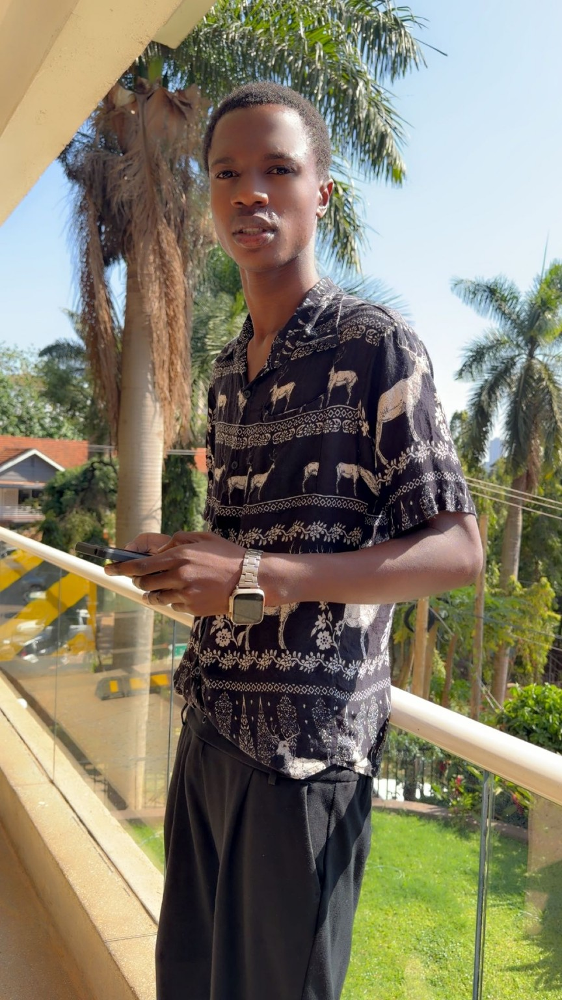

AFRICAN STORIES. HUMAN EXPERIENCES.
Every story carries
a piece of us.
Discover stories inspired by African life, relationships, culture, ambition, struggle and hope.
WELCOME TO OUR WORLD
Stories that stay with you.
Explore novels, poems, plays and ideas from an African perspective.

The person behind the storiesBEHIND THE STORIES
Meet Kitsamba Joshua.
Writer. Novelist. Website designer. Founder and CEO of Kitsamba Writes Africa.
Every place has stories that deserve to be remembered. Every generation has voices that deserve to be heard. Kitsamba Writes Africa is a growing home for stories inspired by African life, relationships, ambition, struggle, culture and hope.
My mission is simple: to tell meaningful African stories in a way that speaks to readers at home and beyond. My creative journey is inspired by writers and poets whose work gives language to identity, humanity, courage and change, including Chinua Achebe, Ngũgĩ wa Thiong’o, Wole Soyinka, Okot p’Bitek, Maya Angelou, Toni Morrison and William Shakespeare.
My novels include The Silence at 2 PM and The Streets of Fate. I am continuing to build this platform and welcome readers, supporters and creative partners who believe in African storytelling.
“Writing Africa, one story at a time.”My Story
HELP THE STORIES GROW
Support African storytelling.
Your encouragement, partnership or contribution can help this creative work reach more people.